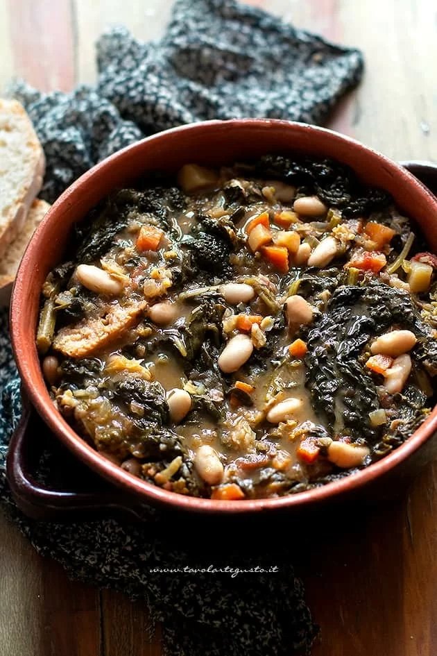
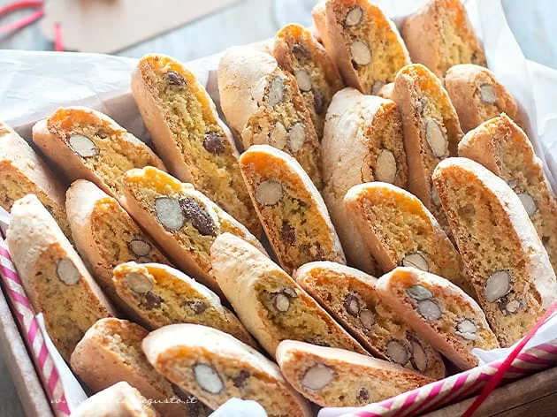
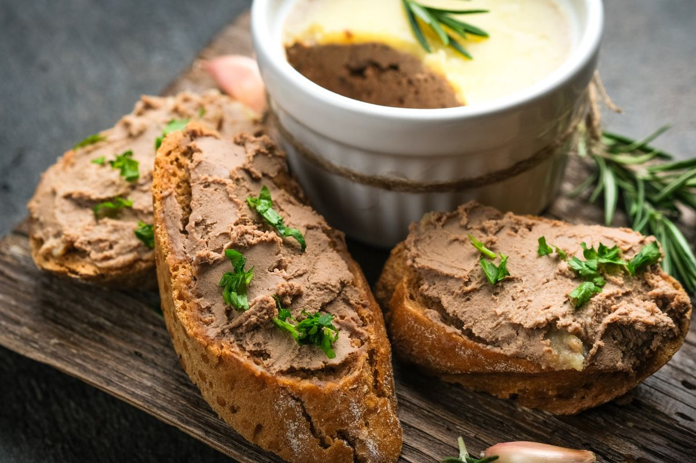
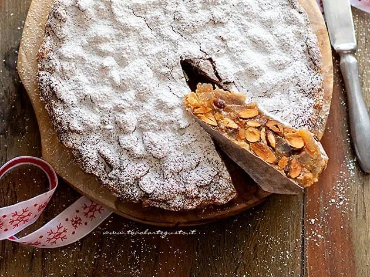
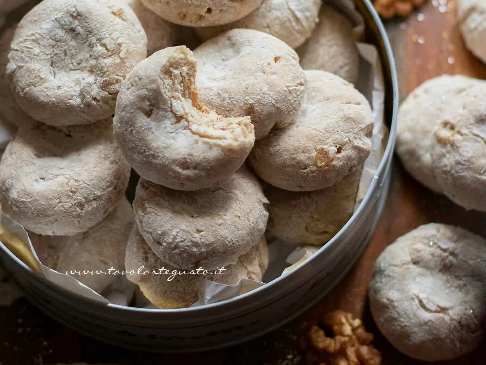
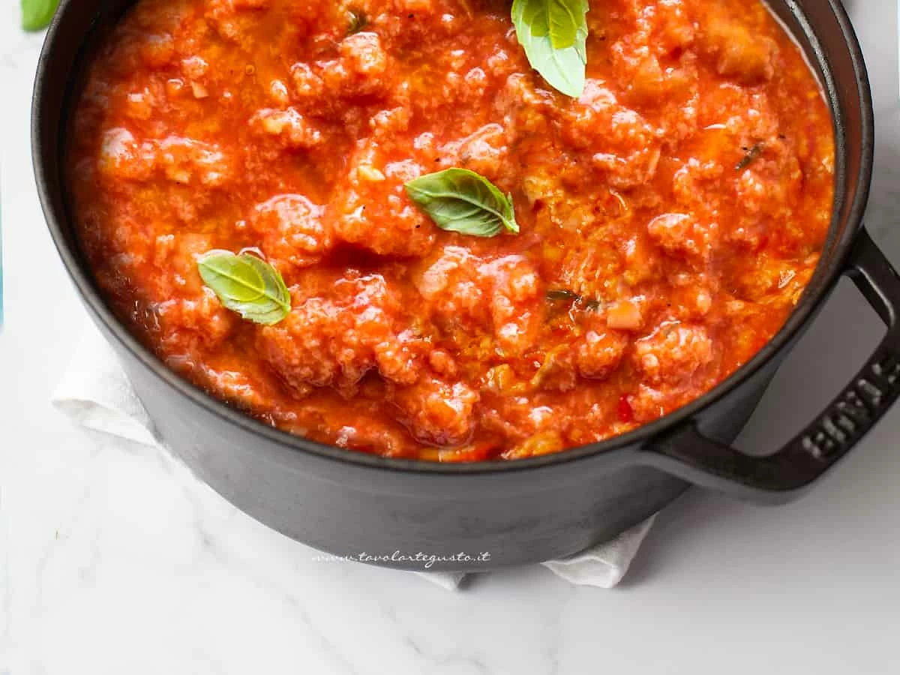
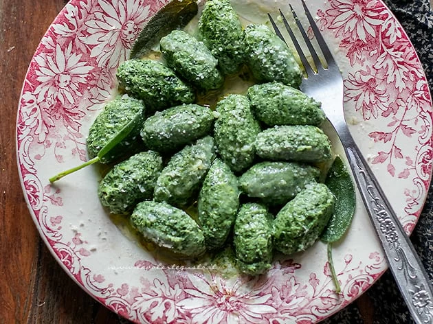
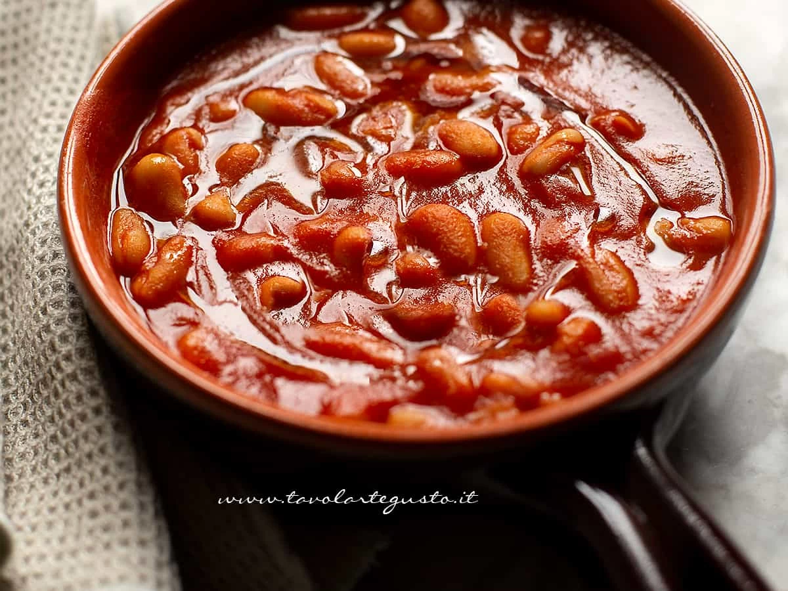

.png)
Welcome to Tuscan Cuisine Chronicles!
Explore Timeless Recipes & Culinary Tales
Let's dig into some recipes >>>-

Ribollita Soup
Ribollita (Tuscan Ribollita) is a warm and hearty first course typical of poor Tuscan cuisine: it is a soup of stale bread and vegetables whose main ingredients are black cabbage, savoy cabbage and beans.
According to peasant tradition, it was prepared on Fridays, the lean day, by putting together the leftovers from the previous day and then simmered several times over a low fire; first with vegetables alone, then with the addition of hard bread, hence the name "ribollita" : the more it is cooked, the better it gets for the following days!
-

Cantucci Cokkies
Cantucci (Cantuccini) also known as "Biscotti di Prato" are typical sweets of traditional Tuscan cuisine : these are dry almond cookies, which are made by slicing strands of dough while still warm and then baked again a few minutes, where the Tozzetti will take on a rustic and slightly golden appearance!
Fragrant and fragrant, Cantucci, just like Cavallucci, are usually accompanied with some excellent Vin santo or Vin brulè! They are wonderful!
-

Liver Croutons
Tuscan liver crostini represent one of the most celebrated and beloved dishes of regional cuisine. These delicious appetizers are made with chicken livers, crispy Tuscan bread and a selection of ingredients that combine perfectly to create a unique flavor.
The origin of Tuscan liver crostini goes back a long way and is rooted in the region's peasant tradition. During the Middle Ages, the noble classes could afford to consume animal liver, which was considered a valuable food. Peasants, on the other hand, used less noble parts of the animal, such as the liver, to avoid waste. To make crostini, Tuscan peasants would cook the liver in a pan with garlic, sage, butter and other flavorings until it was soft and tasty. Afterwards, they would spread the liver cream on toasted Tuscan bread, thus creating Tuscan liver crostini.
-

Panforte Spiced Cake
Panforte is a Christmas cake typical of the city of Siena and the Tuscan tradition. It is a low bread made with almonds, candied fruit, sugar and honey enriched with spices, then baked in the oven on a sheet of wafer; where it will take on a soft to crispy texture and the unmistakable pungent scent and honeyed taste! A unique treat that has medieval origins.
In its ancient version it was prepared in monasteries and was a similar flatbread made with water, honey and fresh fruit ; which after a few days of fermentation turned into a sour bread precisely "panes fortis." It was in 1550, that Sister Berta, to refresh the Sienese fighters after a siege, enriched the recipe with candied fruit, almonds and spices, giving the cake the flavor we all know today!
-

Cavallucci Cokkies
Cavallucci are exquisite sweets, typical of Tuscan pastries, particularly from Siena; made from flour, water, sugar, spices, nuts and candied fruit; then baked in the oven where they take on the appearance of round cookies, slightly flattened in the center, incredibly fragrant, with a soft, chewy texture and a delicious rustic flavor!
In short, a real goodness that has distant origins; already in the court of Lorenzo the Magnificent they were sold in taverns and consumed by drivers on horseback, hence the name cavallucci. Today they have become traditional of the Christmas season along with Cantucci and Ricciarelli.
-

Tomatoe Tuscan Soup
Pappa al pomodoro is a poor first course typical of Tuscan peasant cuisine; based on stale Tuscan unsalted bread, slowly cooked in peeled tomatoes, vegetable broth, basil, extra virgin olive oil; where all the ingredients blend together forming a real creamy, enveloping, super fragrant 'pappa', where at times you can still feel the soft pieces.
A delicacy in its simplicity, which in days gone by was prepared by peasants to recycle stale bread soon became popular and well-known even abroad thanks to the song W la pappa al pomodoro sung by Rita Pavone in 1965.
-

Gnudi Fresh Pasta
Gnudi are a typical first course of Tuscan cuisine, particularly of Siena and Grosseto. They are large, elongated-shaped gnocchi made with ricotta, spinach, and parmesan cheese. From the Tuscan dialect they are called "gnudi" which means "naked" ; that is, stripped of the egg pasta sheet typical of Ravioli, so they are made exclusively with the contents of the filling!
With a very soft texture to the bite, fragrant, flavorful, they are a unique goodness that has poor peasant origins, handed down from family to family. Usually after being blanched a few minutes in water they are seasoned with butter and sage !
-

Uccelletto Beans
Fagioli all'uccelletto are a rich and hearty vegetarian side dish, typical of poor Tuscan cuisine; made with cannellini beans, tomato puree, garlic, oil and sage leaves; which cooked slowly together, result in a warm, comforting and juicy terrine; a goodness that has its roots in peasant tradition; when not being able to afford meat, they cooked beans with the same flavors as fowl and game; that's why they are called Fagioli all'uccelletto .
Ideal for pairing with main courses of all kinds, such as Pork Loin and Beer Chicken ; they are also perfect as a main course, accompanied by homemade bread or slices of Focaccia or some tasty Polenta!
Subscribe Now
Delivered Fresh to Your Inbox!
No Worries, you can unsubscribe at any moment!